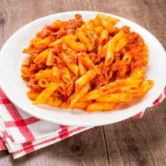

| Macarrones | 500 g |
| Tomate Triturado | 500 g |
| Calabacines | 2 |
| Dientes de Ajo | 3 |
| Zanahoria | 3 |
| Cebolla | 1 |
| Berenjena | 1 |
| Carne Picada de Ternera | 250 g |
| Queso Parmesano | 100 g |
| Aceite y Sal | Al gusto |
Ponemos el agua a calentar en una olla grande. Cuando hierva se vierten los macarrones y se remueven. El fuego no debe ser máximo pero si vivo para que la pasta baile. Cuando se cumplan los minutos de cocción de la pasta indicada en el paquete se escurren los macarrones y se dejan sin nada de agua. Echamos un hilo de aceite a los macarrones y removemos.
A continuación sofreímos las verduras. Se pasan por la picadora los calabacines pelados, la cebolla, los ajos, la berenjena pelada y las zanahorias y se pican finamente. En una sartén grande y profunda se pone suficiente aceite y se sofríen las verduras sin añadir sal.
Cuando las verduras estén casi transparentes y blanditas se añade la carne y se sofríe hasta que tenga buen color y se condimenta al gusto. A continuación añadimos el tomate triturado y bajamos el fuego al mínimo. Debe sofreírse al menos 20 minutos. Cinco minutos antes de que el sofrito del tomate esté listo se añaden tres cucharaditas de azúcar y dos de sal. Se comprueba el sabor y se rectifica al gusto.
En la misma sartén donde hemos preparado la salsa boloñesa de carne volcamos los macarrones y removemos hasta que la salsa quede bien integrada. Dejamos que se calienten juntos unos minutos para que la pasta coja el sabor de la salsa.
Por otro lado hay quien prefiere servir la pasta en el plato y luego volcar la salsa boloñesa por encima con un cucharón para que cada comensal la mezcle a su gusto. Aunque queda más estético de esta forma, personalmente prefiero mezclar los macarrones con la salsa en la sartén para que se integran mejor los sabores. Pero como todo, esto va en gustos.
Para terminar, servimos en un plato hondo acompañados con queso parmesano rallado por encima.
¡Y YA TENEMOS LISTOS NUESTROS DELICIOSOS MACARRONES A LA BOLOÑESA PARA SORPRENDER A TODOS NUESTROS INVITADOS!